Anterior: Senac:
Modelagem conceitual do banco de dados Proxima: Senac: Linguagem SQL
Raiz: Senac: Banco de
dados
Info
- Aula: [UC] Auxiliar na modelagem de Banco de dados - Semana 2 -
Texto 2
- Data: [2023-06-17]
- Recursos (Textos, links, etc):
- Texto
- Videos:
- MySQL Workbench 1 - Acesso ao modo modelagem: Video
Parte 1
O
modelo entidade relaciomento (ER) e o Diagrama entidade e
relacionamento:
Por enquanto, será utilizada a notação original de Peter Chen,
criador da abordagem entidade e relacionamento, em 1976, em conjunto com
os diagramas do MySQL Workbench 8.0, os quais, no momento da elaboração
desse material, são a versão mais atual disponível.
- O modelo entidade e relacionamento, ou simplesmente modelo ER, é uma
abstração do banco de dados (BD)
Conceitos
Entidade
- Entidade é o conjunto de objetos da realidade modelada sobre os
quais se deseja manter informações no banco de dados.
- Como o ER é uma abstração do banco de dados somente os objetos sobre
os quais se deseja manter informação devem constar na modelagem
Uma entidade pode ser um objeto concreto (cliente, pet, automóvel),
mas também podem ser mapeados objetos abstratos (departamento, sala de
aula, conta-corrente).
- Nos diagramas de ER entidades são represetntadas por retangulos:
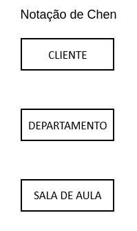
Relacionamento
Autorrelacionamento
- O autorrelacionamento é um relacionamento entre ocorrencias de uma
mesma Entidade
- Quando há essa ocorrência é necessário um conceito adicional que é o
papel de cada entidade no relacionamento. Esse papel deve expressar a
função que uma instancia de entidade cumpre dentro da instancia de um
relacionamento.
- Exemplificando:
- Entidade Empregado (colaborador, na figura)
- Há um empregado que cordena os demais empregados
- Nessa situação temos:
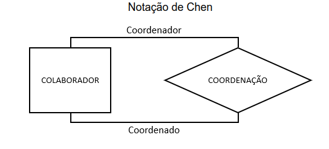
Cardinalidade em
relacionamentos:
Portanto, cardinalidade é "o número de ocorrências de entidade
associadas a uma ocorrência da entidade em questão por meio do
relacionamento" (HEUSER, 2001).
Cardinalidade máxima
- A cardinalidade máxima é o numero máximo de relações que podem
ocorrer entre um objeto e outro:
- Suponha o exemplo do laboratório de informática:
- Cada aluno pode estar em no máximo 1 laboratório de informática,
isso significa que a cardinalidade máxima de aluno é 1 pois um aluno
pode se relacionar com apenas 1 laboratório
- No entanto cada laboratório de informática pode alocar 30 alunos.
Isso significa que a cardinalidade máxima de Laboratório é de 30, pois
cada laboratório pode se relacionar com até 30 alunos
- Em suma n alunos podem estar em cada laboratório, sendo n a lotação
máxima.
- Sendo assim há uma relação de 1 pra muitos, sendo 1 laboratório
contendo muitos alunos mas cada aluno apenas em um laboratório
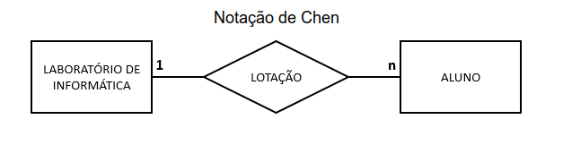
- Podemos dessa forma inferir que uma Foreign Key deve ser incluida em
alunos para representar em que laboratório ele está
Relacionamento binário
- Relacionamentos binários são aqueles que contêm duas ocorrências de
entidade
Classificação dos
relacionamentos binários
- Classificações são definidas por conta das cardinalidades máximas
das entidades envolvidas no relacionamento
1 para 1 (1:1)
- Ocorre quando uma entidade se relaciona com no máximo uma instancia
de outra entidade.
- Exemplo:
- Cada aluno se aloca a um computador no laboratório, dessa forma cada
aluno se relaciona apenas com um computador e cada computador com apenas
um aluno
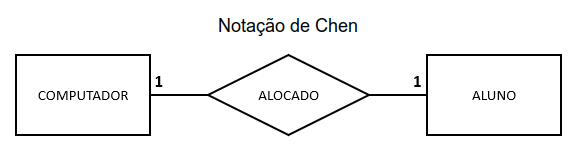
1 para Muitos (1:N)
- Quando instancia da entidade se relaciona com muitas instancias de
outras entidades.
- Exemplo:
- Cada produto possui uma categoria mas cada categoria possui muitos
produtos
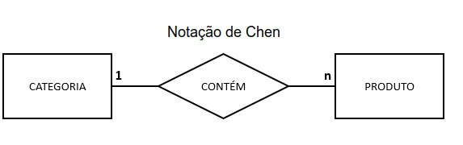
n para n (N:N)
- Quando várias estancias de uma entidade se relacionam com várias
estancias de outra entidade
- Exemplo:
- Um programador pode estar trabalhando em vários projetos e os
projetos podem conter muitos programadores
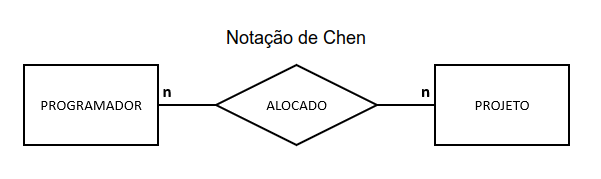
- OBS: no MySQL, quando ocorre uma relação N:N essa
relação se torna uma nova entidade
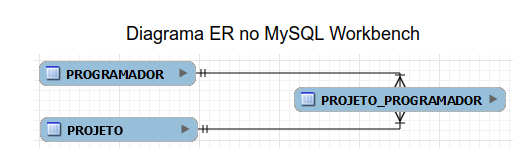
Relacionamentos ternários
- Relacionamentos entre 3 entidades. É possivel construir
relacionamentos ternários, quarternário e assim por diante 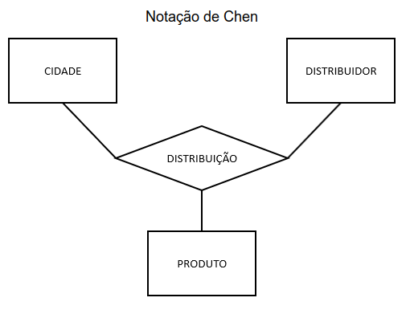
No caso de relacionamentos ternários, a cardinalidade máxima
refere-se a pares de entidades. Logo, em um relacionamento "R" e entre
as três entidades "A", "B" e "C", a cardinalidade máxima de "A" e "B"
indica quantas ocorrências de "C" podem estar associadas a um par de
ocorrências de "A" e "B". Veja o quadro a seguir.
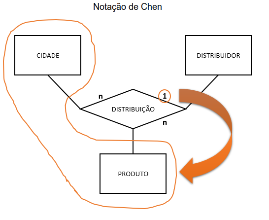
- O exemplo indica que cada distribuidor pode enviar n produtos para
cada para cada cidade. Sendo assim temos o par cidade/produto com
cardinalidade 1, pois um cliente faz o pedido de um produto em uma
cidade, enquanto a cardinalidade de de distribuidor é n pois ele envia n
produtos para n clientes em n cidades
- Veja um exemplo mais complexo a seguir:
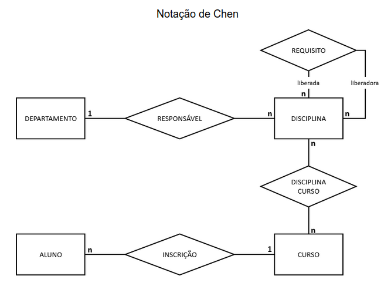
- O exemplo denota que
- Deseja-se manter informações sobre alunos, cursos, disciplinas e
departamentos
- Deseja-se manter informações sobre a associação de:
- Alunos a cursos
- Disciplinas a cursos
- Disciplinas a departamentos
- Disciplinas a requisistos
- As cardinalidades expressam que:
- Cada disciplina pertence a um departamento e cada departamento
possui muitas disciplinas — 1 para Muitos (1:N)
- Uma disciplina pode ter muitos requisitos e um requisito pode
liberar muitas disciplinas — n para n (N:N)
- Uma disciplina pode estar em muitos cursos e os cursos tem diversas
disciplinas — n
para n (N:N)
- Um aluno esta escrito em apenas um curso mas um curso pode ter
vários alunos — 1 para Muitos (1:N)
Parte 2
Atributo
- Atributo é um dado associado a cada instancia de uma entidade ou
relacionamento. Ou seja são os dados pertinentes acerca de cada entidade
ou relacionamento.
- No diagrama de Chen são representados graficamente como circulos com
seu identificador escrito ao lado e ligados as entidades ou
relacionamentos por linhas:
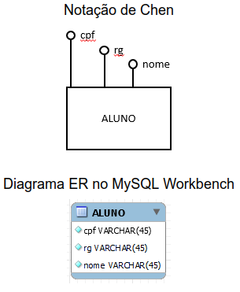 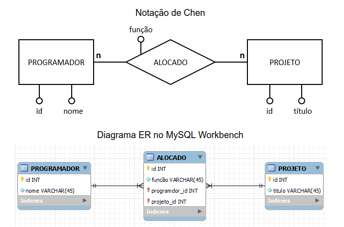
Identificadores:
Conceitos importantes
- Entidades
- Relacionamento entre entidades
- Cardinalidade de relacionamento
- Atributos
- Identificadores